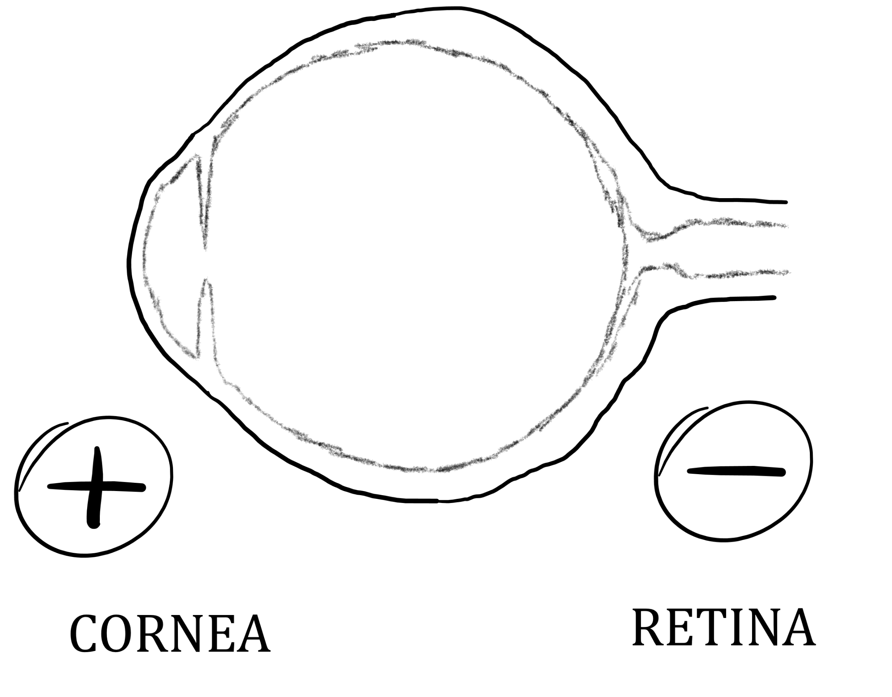
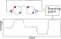
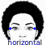
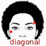
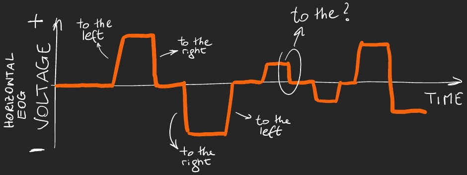
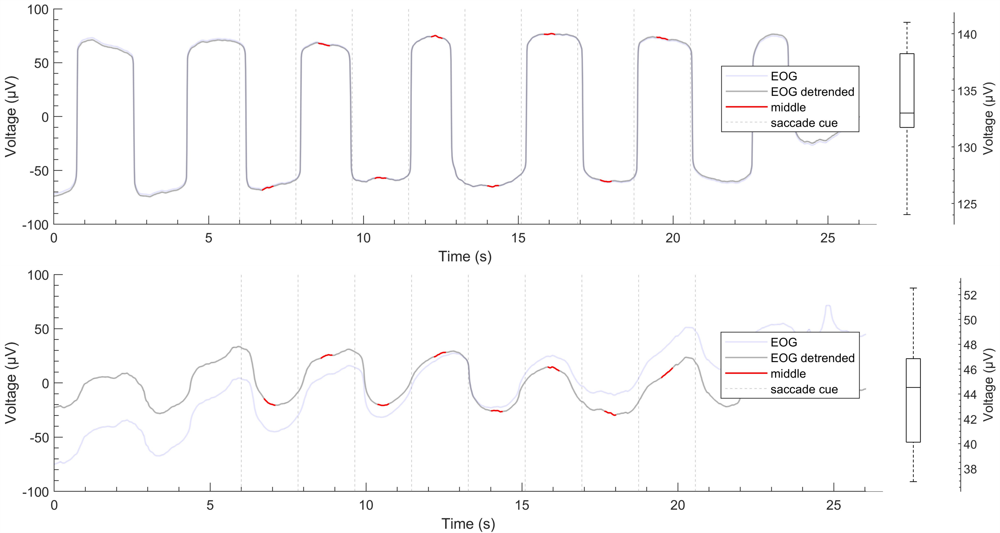
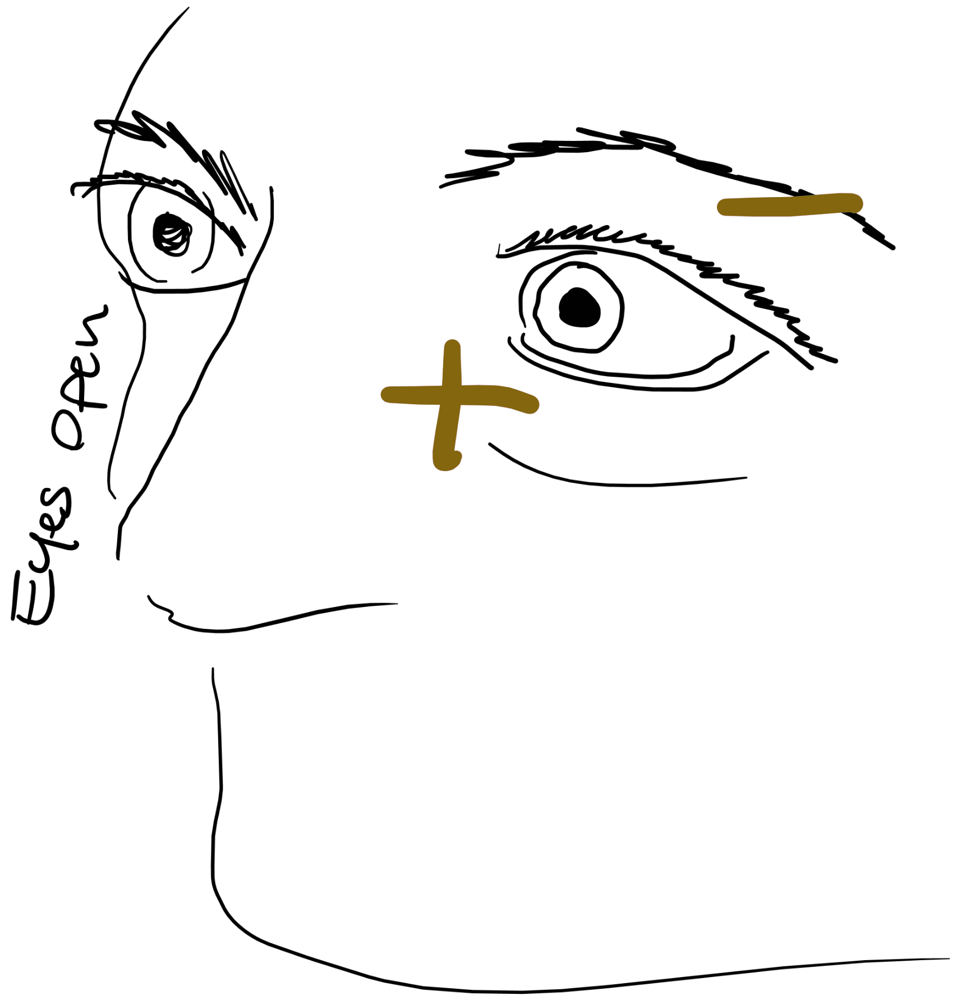

On a computer press F11 to de/activate full-screen view.
For smartphone and review: Bottom left menu → Tools → PDF Export Mode.
For pdf document: use “learning resources” link above.
Last modified: 2026-01-31
QR code to these slides:
PIN
0000
Agenda
Eye movements
Extraocular muscles
The eye as a dipole
Electrooculography (EOG)
Biological sources of the EOG
EOG signal characteristics
EOG metrics
EOG limitations and future directions
Why study eye movements
Studying eye movements is useful in sevarl domains. Some examples:
Research: Understanding more functioning (e.g., association between eye movements and cognitive processes at rest or during tasks such as reading, driving, sport)
Sleep: Distinguishing different stages of sleep, particularly REM sleep.
Human-computer interface: Enabling hands-free systems for controlling computers and other devices (e.g., wheelchair, speller).
Fatigue and sleepiness monitoring: Monitor drowsiness while driving (e.g., transport, military).
Sport: Analyzing athletes’ eye movements to improve performance and training techniques.
Photoreceptors in the retina
The retina contains two types of photoreceptors:
Rods
Cones
main location
Peripheral retina
Central retina, especially fovea
light sensitivity
Highly sensitive
Less light-sensitive
motion sensitivity
high
low
colour
no (monochromatic)
yes (color vision)
Density distribution and density varies across the retina:
Periphery: Mostly rods so better motion detection and night vision
Fovea: Mostly cones and with high density so sharp and colored vision
Types of eye movements
⚡ Saccades
🎯 Fixational movements
🌊 Smooth movements
🚂 Nystagmus
⚡ Saccades
Quick jumps from one fixation point to another
They allow to foveate objects or locations
foveate = direct the eyes so that image of interest in reflected in the part of the retina with most photoreceptors called fovea
One of the fastest human movements, with angular speed up to 700°/s
🎯 Fixational movements
Far from being a quiet interlude between eye movements, fixation is a lively period of continuous albeit microscopic motion, full of complex interactions that we are just beginning to understand.
Krauzlis et al. (2017)
Mostly involuntary.Their main function: avoiding retinal image fading.Several types:
Microsaccades (tiny jerky movements)
Tremor (rapid oscillations)
Drift (slow wandering movements)
🌊 Smooth movements
Slow movements of the eyes to allow fixation under moving conditions. Two types:
smooth pursuit movements The eyes track a moving object through slow conjugate movements. The head might be still. (Try… you can’t without anything to track.)
smooth compensatory movements The eyes fixate on a still object but the head and/or the body move (Try… pick a point and move your head)
optokinetic: watching a moving pattern (e.g., a train passing by)
vestibular: compensations for rhythmic head movements
Muscular control of the eyes
Six muscles attached to the outer surface of each eye
Extraocular muscles
Each muscle pair is mostly associated with one movment type:
However, in practice, all muscles contribute to all movements.
Measuring eye movements
In principle, we could measure the activity of the extraocular muscles to understand in which directions the eyes are moving.
But it is very impractical to record this activity: it would require invasive electrodes.
There are other techniques for measuring eye movements. One of these, the electrooculogram, exploits an electrical property of the eyes: the eye dipole.
The eye as a dipole

The retina (or fundus) is electrically more negatively charged than the cornea.
Why? The greater negativity in the retina is due to metabolic activity due to photoreceptors and other neurons.
This creates a potential, called corneoretinal (or corneofundal) potential. This potential forms a dipole.
More on the eye dipole
The eye dipole is aligned with the optical axis of the eye, from the retina outward the cornea. Its positive side points at what we are looking. Its negative side points in the opposite diretion.
The corneoretinal potential is dynamic. It mainly depends on ambient light. In darkness or with eyes closed, photoreceptors are less/not active leaading to lower metabolic activity. The dipole decreases in magnitude.Changes in the corneoretinal potential are slow. The corneoretinal potential is relatively stable over minutes.
Electrodes placed around the eyes can detect changes to the orientation of the eye dipole.
Measuring changes to the dipole
Assume you place two electrodes, one left and one right of the eyes.
When you look left: the left side becomes more positive while the right side becomes more negative.
When you look right: the right side becomes more positive while the left side becomes more negative.
A system consisting of electrodes (plus electrolytic paste, other hardware, and software–more on this later) to record electrical activity near the eyes.
A system consisting of electrodes (plus electrolytic paste, other hardware, and software–more on this later) to record electrical activity near the eyes.
A system consisting of electrodes (plus electrolytic paste, other hardware, and software–more on this later) to record electrical activity near the eyes.
A system consisting of electrodes (plus electrolytic paste, other hardware, and software–more on this later) to record electrical activity near the eyes.
A system consisting of electrodes (plus electrolytic paste, other hardware, and software–more on this later) to record electrical activity near the eyes.

Electrode locations
Electrodes are placed around the eyes, but more specifically where?
It depends on the direction in which we want to record eye movements.

Electrode locations
Electrodes are placed around the eyes, but more specifically where?
It depends on the direction in which we want to record eye movements.
Electrode locations
Electrodes are placed around the eyes, but more specifically where?
It depends on the direction in which we want to record eye movements.

Electrode location nomenclature
There is a standardized nomenclature to identify the location of the electrodes.
“L” stands for lateral
“I” stands for inferior (below)
“S” stands for superiod (above)
“1” stands for left
“2” stands for right
LABEL
SITE
LO1
lateral ocular left
LO2
lateral ocular right
IO1
inferior ocular left
IO2
inferior ocular right
SO1
superior ocular left
SO2
superior ocular right
Montage options: Bipolar channels
When two electrodes are referenced to one another, their montage is called bipolar. In a bipolar montage, the voltage reflects the difference in electrical potential between the two sites.
Horizontal EOG channel:
When computing it as left - right, eye movement to the left/right = increased/decreased voltage
\[
hEOG = LO1-LO2
\]
Vertical EOG channel
We can compute two vertical channels, one per eye, and then average them.
\[
vEOG_{left} = SO1 - IO1
\]
\[
vEOG_{right} = SO2 - IO2
\]
\[
vEOG = \frac{vEOG_{left}+vEOG_{right}}{2}
\]
Electrooculographic signals #1

horizontal EOG signal computed as \(LO1 - LO2\)
Impact of high-pass filtering
High-pass filtering is not recommended when studying eye movements. But many systems apply high-pass filtering (it’s simpler).
The high-pass filter reduces slow trends and retains faster changes.
Consider an EOG signal (with saccades and fixations).Applying high-pass filter makes the EOG signal less “square”.This is as if only the initial changes are detected or only the quick changes that happen (keeping eyes still can be considered like an extremely slow change).
For example, voltage increases as you move the eyes up. You would expect the voltage to not change is you maintain your eyes in that position.But when high-pass filtering is applied, the voltage goes gradually back to baseline even if the eyes are still up.
EOG calibration
The native units of the EOG are Volts, but eye movements are better described as visual angles. Eye movements are angular in nature.
Calibration allows to calculate how many Volts correspond to 1 degree of visual angle, so that we can convert our EOG recording from Volts to degrees.
EOG calibration: acquisition

EOG calibration: processing
Calibrated EOG
The EOG signal is now represented in degrees of visual angle.
The figure shows horizontal, vertical, and combined EOG signals, in the seconds before the execution of a golf putt.
The combined signal is computed as the vectorial sum of the calibrated horizontal and vertical signals.
Calibrated EOG
Because the source of the EOG (the corneoretinal potential) is not fixed, calibration should be done regularly unless the recording session is very short.
EOG eye movement metrics
Several metrics can be extracted from the EOG signal to characterize eye movements:
saccades:
number
extent
velocity
fixations
number
duration
Quiet Eye durations (popular in sport tasks)
Eye blink as seen in the EOG

Usual negativity at the back due to the corneoretinal potential
Eye blink as seen in the EOG
Transient positivity above the eye
Eye blink as seen in the EOG
Back to baseline
EOG Blink wave characteristics
Typical duration: 200-400 ms
Biphasic pattern
Initial positive deflection
Followed by negative component
Amplitude typically larger than saccades
More prominent in vertical than horizontal channels
Physiological source of the EOG blink
Not as well understood as the source of eye movements.
Initially thought to be due to upward rotation of the eyeball (i.e., rapid dipole rotation)
More recently thought to be due to eyelid bridging the corneoretinal positivity with the forehead (changes in electrical conductivity).
EOG Blink metrics
Several metrics can be extracted from the EOG signal to characterize blinking behavior:
Number of blinks: Total count of blinks during a recording period.
Blink rate: Number of blinks per minute, a commonly reported metric in psychophysiology research.
Blink duration: Time duration of individual blinks, typically measured from initial positive deflection to return to baseline (200-400 ms range).
Blink flurries: Clusters of rapid successive blinks occurring in quick succession, often associated with cognitive load or fatigue.
Flurry rate: Frequency of blink flurries per minute, reflecting periods of increased blinking activity.
These metrics are useful for assessing cognitive workload, fatigue, attention, and other psychological states during task performance or resting conditions.
EOG Limitations
While EOG is a useful technique, it has some limitations:
Signal noise: EOG signals can be affected by electrical noise from other sources, such as muscle activity and external electronic devices.
Artifact contamination: Blinks and other involuntary eye movements can introduce artifacts into the EOG signal, complicating data analysis.
Head movement confounders: EOG saccadic signals reflect movements of the eyeballs relative to the head. By looking at the EOG only or without behavioural constrains, it is difficult to know whether the eyes, the head, or both have moved.
Limited spatial resolution: EOG provides less precise information about the exact point of gaze compared to other eye-tracking methods, such as video-based eye trackers.
Calibration drift: The corneoretinal potential can change over time, requiring frequent recalibration.
Future Directions
Research and development in EOG technology are ongoing, with several promising directions:
Improved signal processing: Developing advanced algorithms to reduce noise and artifacts in EOG signals. A promising technique is median filtering.
Integration with other modalities: Combining EOG with other physiological measurements, such as EEG and EMG, for a more comprehensive understanding of human behavior.
Wearable EOG devices: Creating portable and user-friendly EOG systems for real-world applications, such as sports training and assistive technology.


 Usual negativity at the back due to the corneoretinal potential
Usual negativity at the back due to the corneoretinal potential